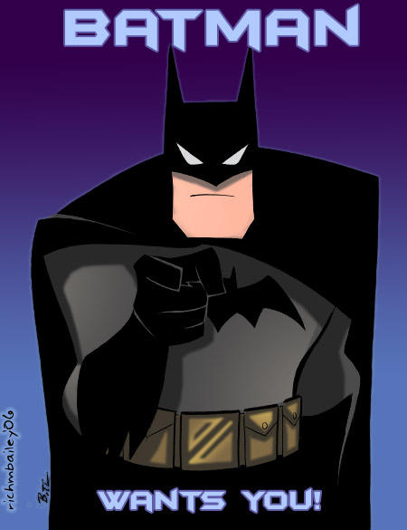

PROTECT YOURSELF
AND GOTHAM

The time has come when Batman is no longer the same. He has aged and retired, but he wants his business not to die and develop. Therefore, he decided to put the power of his weapons in the hands of ordinary people so that they would defend themselves on their own. It's your time to defend our beloved Gotham. Justify the trust, become a hero!
